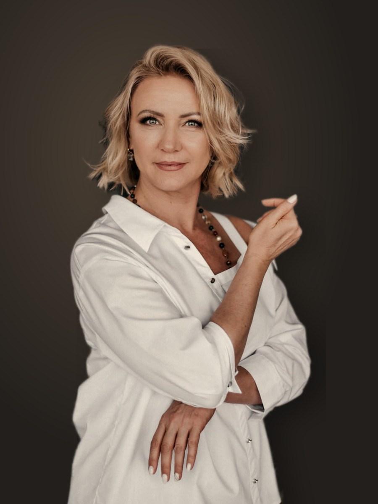
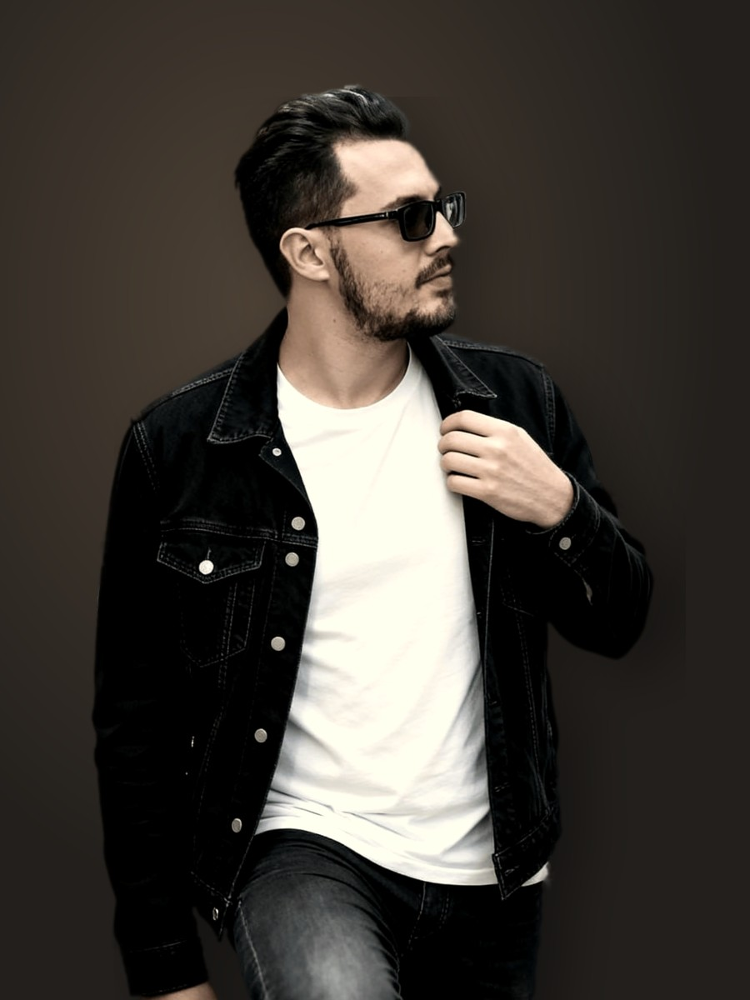
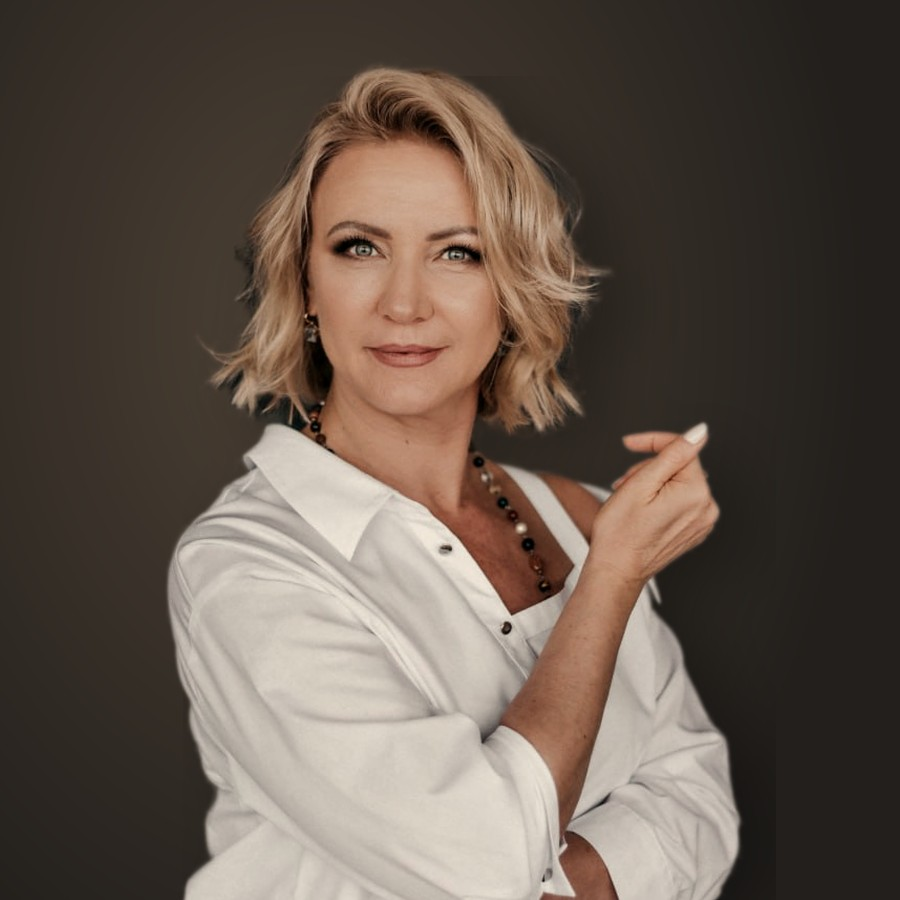
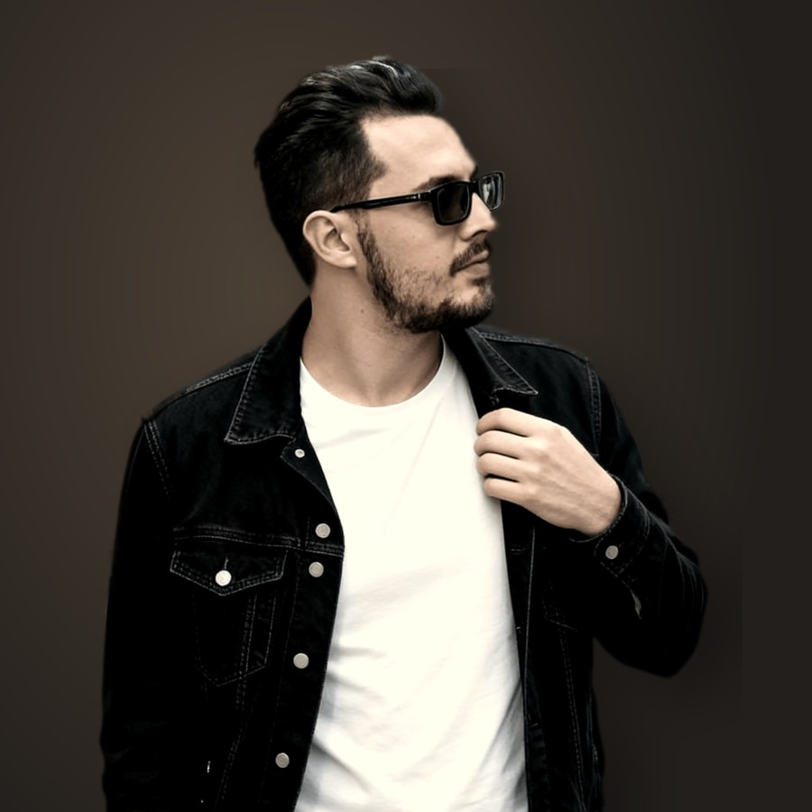

Куда уходят силы и что собрать из того, что у тебя уже есть


Между человеком и твоим продуктом нет конвертора: системы, которая превращает чужого человека в твоего клиента.
Лампочка освещает всю комнату и почти не греет. Тот же свет, собранный линзой в точку, прожигает бумагу.
Твои силы сейчас разлиты по комнате. Диагностика собирает их в точку.
Бесплатно. Смотрим, куда сейчас уходят внимание и силы и где ты застрял. Находим, что из твоего продукта, опыта и аудитории уже работает.
Карта остаётся у тебя, что бы ты ни решил дальше.
Мы берём то, что у тебя уже есть: продукт, опыт, людей, которые тебя читают.
Как в шкафу, где вещей полно, а надеть нечего. Покупать новое не нужно: собираем образы из того, что уже висит.
Так у эксперта появляется система, которая приводит клиентов без ручного режима, и время на любимое дело.
Пока рано, если продаж ещё нет. Тогда сначала продукт и первые клиенты, а к диагностике вернёмся позже.
и перестала всё тащить на себе.

Врач-психотерапевт, 27 лет в психологии.
7 лет в финансах.
Автор методологии «Финансовая архитектура жизни LifeTime».

Создаю продукты с нуля и строю долгую стратегию вместо разового запуска.
Работаю и с микроблогами на старте, и с крупными экспертами.
Собираю команду и координирую её работу в проекте клиента.
Карта останется у тебя, даже если дальше пойдёшь сам.